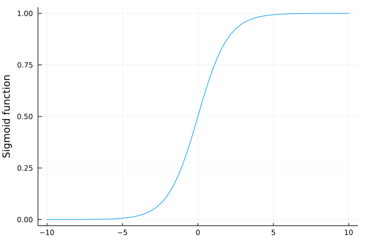

Exercises
Data are often normalized. Each feature subtracts its mean and then divides the result by its standard deviation. The normalized features have zero mean and unit standard deviation. This may help in several cases:
- It may help when each feature has different order of dimension (such as milimeters and kilometers). Then the gradient would ignore the feature with the smaller values.
- It may help with problems described in Exercise 4.
Write a function normalize which takes as an input a dataset and normalizes it. Do you see any differences with the input is the original and normalized dataset when
- the linear regression is optimized via the gradient descent?
- the logistic regression is optimized via the Newton's method?
Do you have any intuition as to why?
Show the details for the derivation of the logistic regression.
Solution:
Since $\hat y$ equals the probability of predicting $1$, we have
\[\hat y = \frac{1}{1+e^{-w^\top x}}\]
Then the cross-entropy loss reduces to
\[\begin{aligned} \operatorname{loss}(y,\hat y) &= - y\log \hat y - (1-y)\log(1-\hat y) \\ &= y\log(1+e^{-w^\top x}) - (1-y)\log(e^{-w^\top x}) + (1-y)\log(1+e^{-w^\top x}) \\ &= \log(1+e^{-w^\top x}) + (1-y)w^\top x. \end{aligned}\]
Then it remains to sum this term over all samples.
Show that if the Newton's method converge for the logistic regression, then it found a point globally minimizing the logistic loss.
Solution:
We derived that the Hessian of the objective function for logistic regression is
\[\nabla^2 L(w) = \frac 1n \sum_{i=1}^n\hat y_i(1-\hat y_i)x_i x_i^\top.\]
For any vector $a$, we have
\[a^\top x_i x_i^\top a = (x_i^\top a)^\top (x_i^\top a) = \|x_i^\top a\|^2 \ge 0,\]
which implies that $x_i x_i^\top$ is a positive semidefinite matrix (it is known as rank-1 matrix as its rank is always 1 if $x_i$ is a non-zero vector). Since $y_i(1-\hat y_i)\ge 0$, it follows that $\nabla^2 L(w)$ is a positive semidefinite matrix. If a Hessian of a function is positive semidefinite everywhere, the function is immediately convex.
The logistic regression on the iris dataset failed in 6 out of 100 samples. But the visualization shows the failure only in 5 cases. How is it possible?
Solution:
We use the same code as before and find indices of the miclassified samples
y_hat = 1 ./(1 .+exp.(-X_ext*w))
pred = y_hat .>= 0.5
ii = findall(pred .!= y)Then we show the values of the data and labels at these indices. We sort the rows by sortslices. You cannot use sort as it would not sort rows but it would perform the sorting operator on every column independently.
aux = hcat(X[ii,:], y[ii])
sortslices(aux, dims=1)6×3 Array{Float64,2}:
4.5 1.7 1.0
4.8 1.8 0.0
5.0 1.5 1.0
5.0 1.7 0.0
5.1 1.5 1.0
5.1 1.6 0.0A short look at the image shows that the point $(4.8, 1.8)$ is misclassified but the image shows it correctly. Let us show all such points
ii = findall((X[:,1].==4.8) .& (X[:,2].==1.8))
aux = hcat(X[ii,:], y[ii])3×3 Array{Float64,2}:
4.8 1.8 0.0
4.8 1.8 1.0
4.8 1.8 1.0As we can see, there are three samples with the same data. Two of them have label 1 and one label 0. Since the incorrectly classified sample wa redrawn, it was not possible to see it.
Show that the Newton's method fail when started from the vector $(1,2,3)$. Can you guess why it happened? What are the consequences for optimization? Is gradient descent going to suffer from the same problems?
Solution:
First, we run the logistic regression as before, only with a different starting point
log_reg(X_ext, [1;2;3])3-element Array{Float64,1}:
NaN
NaN
NaNThis resulted in NaNs.
When something fail, it may be a good idea to run a step-by-step analysis. In this case, we will make one iteration of the Newton's method
julia> w = [1;2;3];
julia> X = X_ext;
julia> X_mult = [row*row' for row in eachrow(X)];
julia> y_hat = 1 ./(1 .+exp.(-X*w))
100-element Array{Float64,1}:
0.9999724643088853
0.9999724643088853
0.9999815421067044
0.9999322758503804
0.9999750846110607
0.9999589221322353
0.9999815421067044
0.9997515449181605
0.9999628310628971
0.9999387202603833
⋮
0.9999969488837513
0.999993209641302
0.999998629042793
0.9999988775548947
0.9999972392350497
0.9999924954984029
0.9999949695696981
0.999997739675702
0.9999917062496261
julia> grad = X'*(y_hat.-y) / size(X,1)
3-element Array{Float64,1}:
2.129852089784904
0.66295432173409
0.49996260866776915
julia> hess = y_hat.*(1 .-y_hat).*X_mult |> mean
3×3 Array{Float64,2}:
0.000598417 0.00018514 0.000147894
0.00018514 5.80682e-5 4.56733e-5
0.000147894 4.56733e-5 3.73868e-5
julia> w -= hess \ grad
3-element Array{Float64,1}:
-10764.590886852531
-1801.6675865928162
31420.070268736363Starting from bottom, we can see that even though we started with relatively small $w$, the next iteration is four degrees of magnitude larger. This happened because the Hessian hess is much smaller than the gradient grad. This indicated that there is some kind of numerical instability. The prediction y_hat should be distribution in the interval $[0,1]$ but it seems that it is almost always close to 1. Let us verify this my showing the extrema of y_hat
extrema(y_hat)(0.9997254218438986, 0.9999994956525918)
They are indeed too large.
Now we explain the reaosn. We know that the prediction equals to
\[\hat y_i = \sigma(w^\top x_i),\]
where $\sigma$ is the sigmoid function. Since the mimimum from $w^\top x_i$
minimum(X*[1;2;3])8.2
is large, all $w^\top x_i$ are large. But plotting the sigmoid funtion
σ(z) = 1/(1+exp(-z))
xs = -10:0.01:10
plot(xs, σ.(xs), label="", ylabel="Sigmoid function")
it is clear that all $w^\top x_i$ hit the part of the sigmoid which is flat. This means that derivative is zero and the Hessian is even smaller zero. Then the ratio of the gradient and Hessian is huge as we observed above.
The gradient descent will probably run into the same difficulty. Since the gradient will be too small, it will take a very large number of iteration for sigmoid to escape the flat region.
This is a known problem of the sigmoid function. It is also the reason why it was replaced in neural networks by other functions.